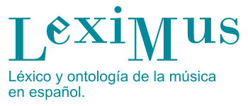
Investigadores e Investigadoras del Proyecto LexiMus USAL
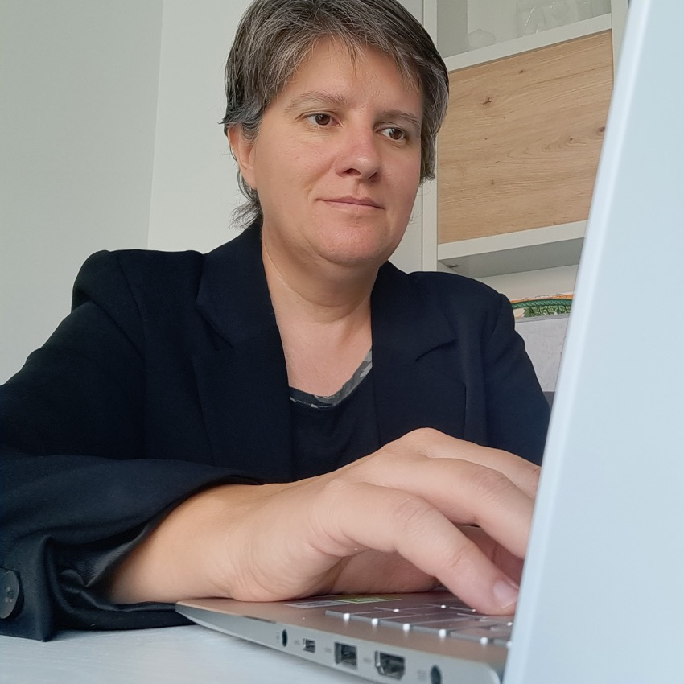
Catedrática de Universidad en el Área de Música/Musicología de la Universidad de Salamanca. Especializada en la música de la llamada Generación del 27 y las vanguardias musicales de principios del siglo XX. Su interés por los estudios lingüísticos y musicales la ha llevado a investigar especialmente con prensa histórica y crítica musical. Su campo de investigación se centra en las relaciones entre ideología, género, música y poder.
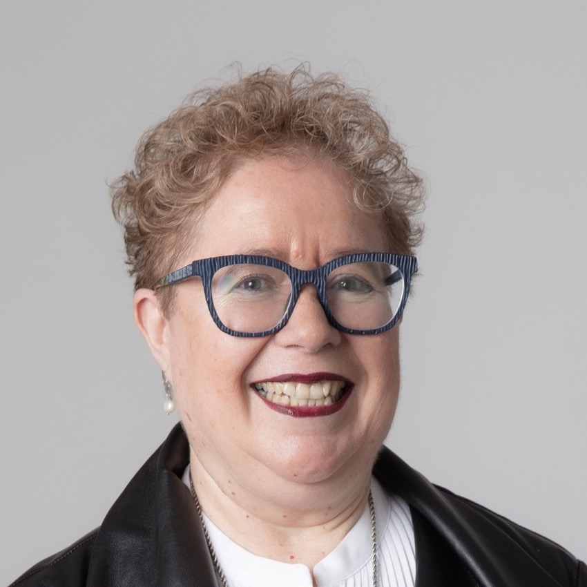
Catedrática, USAL. Su actividad docente desde 1989 allí la compagina como profesora invitada en universidades españolas y extranjeras. Posee el Premio Nacional Gloria Vegué a la Trayectoria de Excelencia en la Docencia 2021 y el María de Maeztu a la Excelencia Científica 2024. Sus principales campos de docencia e investigación son la recepción de música popular española en EEUU con perspectiva de género y la música aplicada en audiovisuales. Participa en I+D+I del MINECO, JCyL y programas internacionales; con más de 130 publicaciones y 32 tesis dirigidas, es la IP del GIR IHMAGINE (Intangible Heritage Music and Gender International Network).
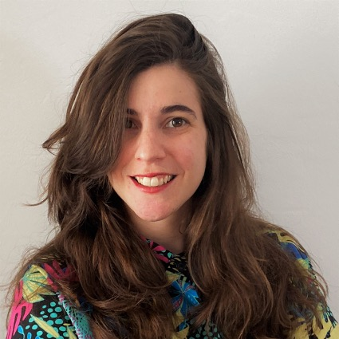
Marina Hervás (1989) es licenciada en Historia y Ciencias de la música por la Universidad de La Rioja, en Filosofía por la Universidad de La Laguna, con Máster en Teoría del Arte por la misma universidad, y doctora en Filosofía por la Universidad Autónoma de Barcelona gracias a una beca FPU. Ha realizado estancias de investigación pre- y posdoctorales en el Instituto de Investigación Social de Frankfurt, en la Academia de las Artes de Berlín, en el Internationales Musikinstitut Darmstadt y en la Paul Sacher Stiftung de Basilea. Ha participado en festivales como Ensems, Memmix, FASE, La Escucha Errante, VANG, Punto de Encuentro (AMEE) o NAK; y ha colaborado con ensembles como OCAZ Enigma, Sigma, Quantum, Laboratorio KLEM, Ciklus, Sonido Extremo o Sinoidal. Ha sido IP del proyecto Abgrundlab: Emancipación tecnológica a partir de la experimentación sonora del Medialab-UGR. Actualmente, es profesora contratada doctora en el Departamento De Historia y Ciencias de la Música de la Universidad de Granada, subdirectora del Centro de Cultura contemporánea La Madraza de la Universidad de Granada (Vicerrectorado de Extensión, Patrimonio y Relaciones Institucionales) y dirige su área de música
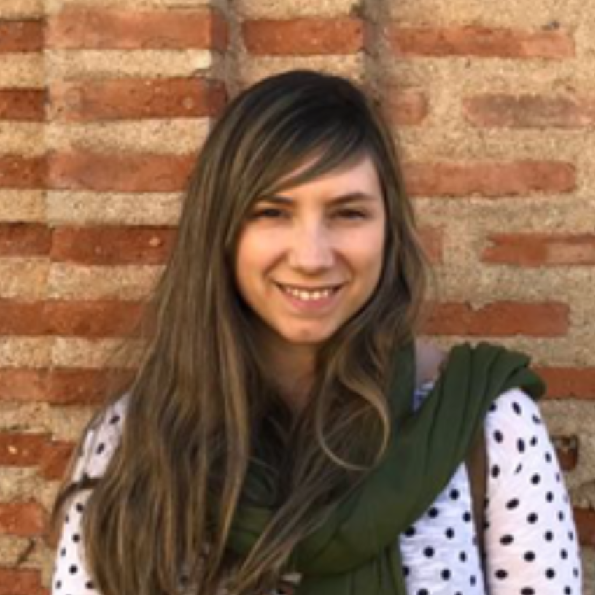
Doctora en Musicología, Licenciada en Historia y Ciencias de la Música y Diplomada en Magisterio. Ha cursado diversos posgrados como el Máster en Música Hispana, Máster en Musicoterapia o el Máster en Profesor de Educación Secundaria y ha disfrutado de una beca predoctoral FPU vinculada al Departamento de Didáctica de la Expresión, Musical, Plástica y Corporal de la Universidad de Salamanca. Entre su formación musical destaca el Título Profesional de Viola, así como el Diploma Pedagógico Willems®. Sus principales líneas de investigación son la Didáctica musical, Música y género y la interpretación musical a través de la prensa. Sobre ellas ha publicado diversos trabajos y participado en numerosos congresos a nivel nacional e internacional. Actualmente es Profesora Permanente Laboral en la Facultad de Educación de la Universidad de Salamanca
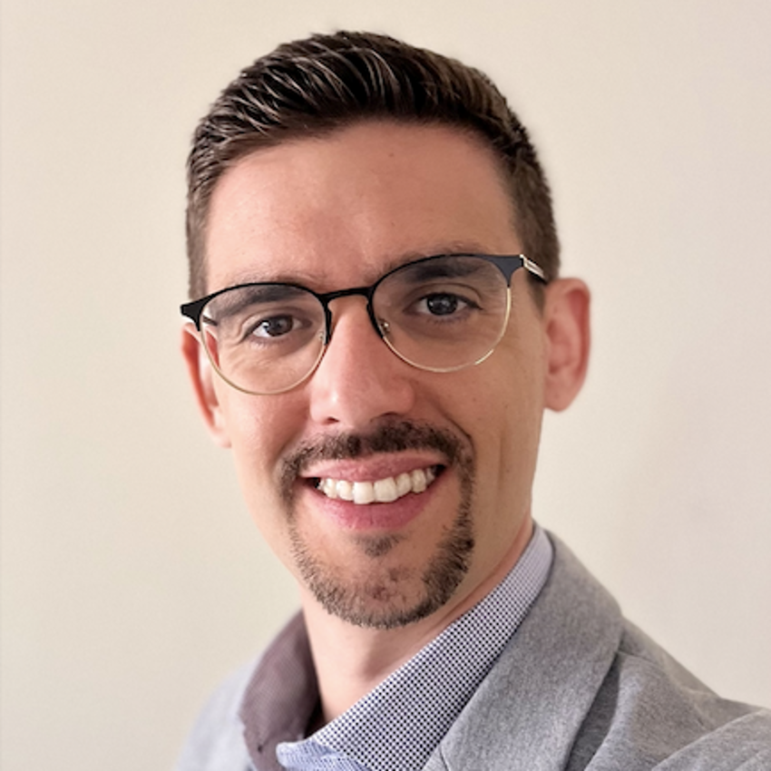
Profesor Permanente Laboral en la Universidad de Salamanca. Sus principales temas de interés son la historia de la ópera, la historia de las ideas musicales y la filosofía de la música contemporánea, sobre los cuales ha publicado decenas de artículos y ha obtenido varios premios de investigación nacionales e internacionales. Sus investigaciones se caracterizan por un enfoque interdisciplinar que incluye la historia de la política, las poéticas literarias, la historia de la ciencia y la teología. También ha publicado numerosos artículos sobre filosofía, literatura y cine
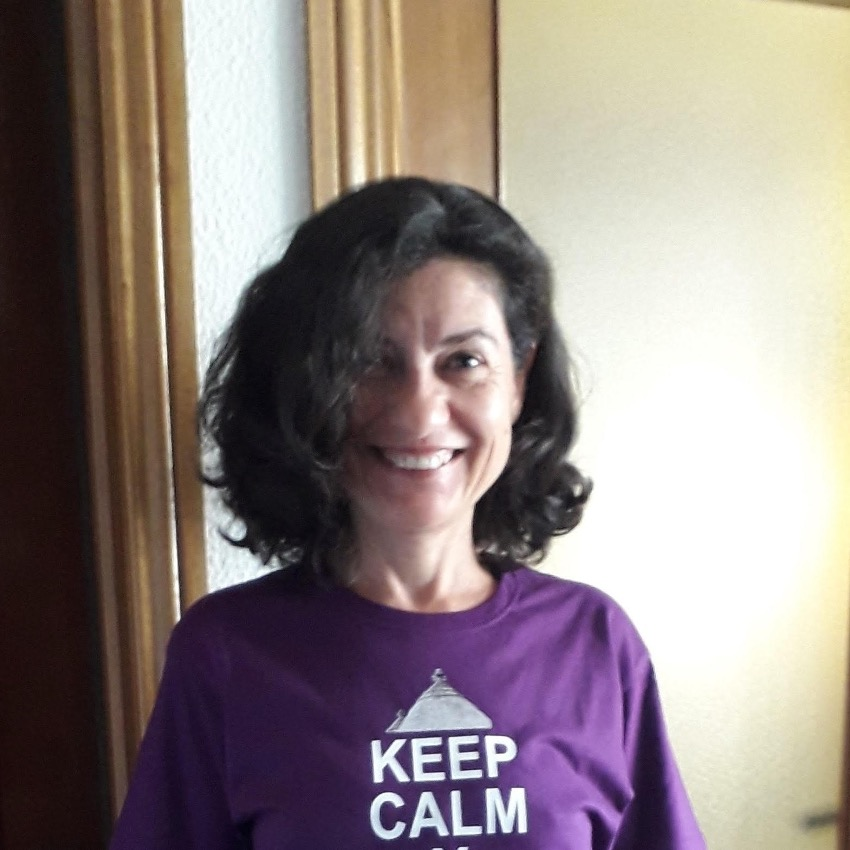
Profesora de Etnomusicología y Antropología Social de la Universidad de Salamanca. Especializada en la música de la región Asia Pacífico y las músicas populares en Estados Unidos a partir de la exploración holística de las prácticas expresivas. Sus líneas de investigación parten de la articulación del patrimonio cultural y musical en las dinámicas de construcción de identidades, así como el estudio de la cultura popular con perspectiva de género
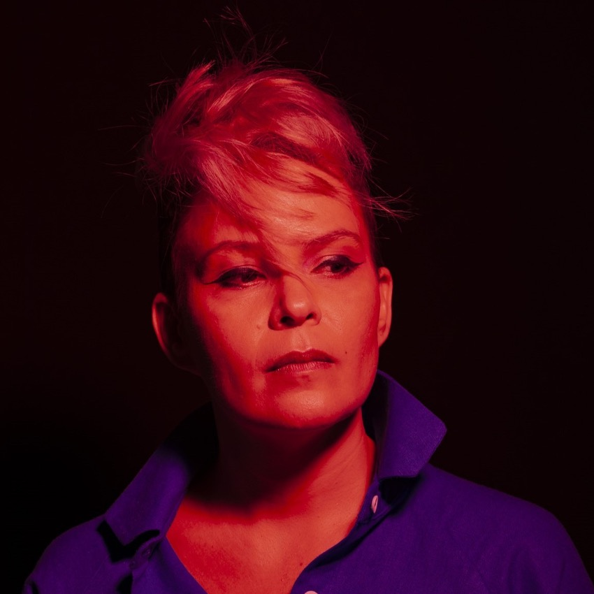
Susan Campos Fonseca (Costa Rica, n. 1975), profesora asociada de la Universidad de Costa Rica. Doctora en Música, Máster en pensamiento español e iberoamericano por la Universidad Autónoma de Madrid – UAM, y Licenciada en dirección musical (orquesta y banda) por la Universidad de Costa Rica (UCR). Campos-Fonseca se destaca como docente e investigadora especialista en musicología, estudios sónicos, filosofía de la cultura y la tecnología. Su estética como improvisadora-compositora y multiinstrumentista incluye la música electroacústica, la música concreta instrumental, el espectralismo y el posminimalismo. Premio de Musicología Casa de las Américas 2012, actualmente es profesora de Historia de la música y Técnicas de investigación en el Departamento de Teóricos y Composición de la Escuela de Artes Musicales de la UCR, donde también coordina el Archivo Histórico Musical. La Dra. Campos Fonseca colaboradora como especialista con el Grupo de Ingeniería Aeroespacial (GIA-UCR) y el Instituto de Investigaciones en Arte (IIARTE-UCR), y es profesora invitada del Programa de Maestría y Doctorado en Música de la Universidad Nacional Autónoma de México (UNAM). Susan Campos-Fonseca es artista del sello discográfico Irreverence Group Music, y de la editorial Nueva York Poetry Press, ambos con sede en la ciudad de New York, Estados Unidos
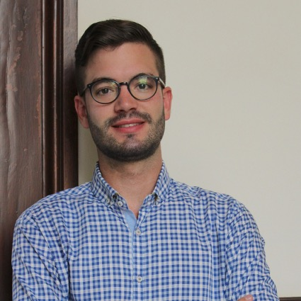
Doctor en Musicología por la Universidad de Salamanca. Graduado en Historia y Ciencias de la Música por la Universidad de Salamanca (premio extraordinario) y posgrado en Investigación Musical (Universidad de Murcia) y Formación del Profesorado de la especialidad de Música (Universidad de Murcia). En noviembre de 2018 defendió su tesis Música, refolklorización e identidad: los grupos de Coros y Danzas de Murcia desde la posguerra hasta la preautonomía (1939-1978) calificada con sobresaliente cum laude. Ha sido becario predoctoral (FPU) del Ministerio de Cultura y Deporte, posteriormente amplió su formación en Etnomusicología en el Conservatorio Superior de Música de Castilla y León y desde 2018 es titular, por oposición, de la Cátedra de Etnomusicologia del Conservatorio Superior de Música de Murcia. Es miembro del GIR IHMAGINE (USAL)
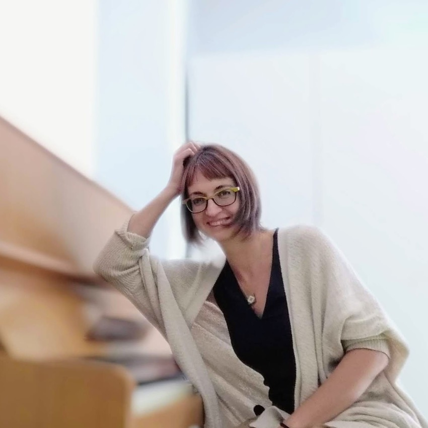
Catedrática de Etnomusicología y jefa del departamento de Musicología del Conservatorio Superior de Música de Navarra desde el año 2019. Doctora en Musicología por la Universidad de La Rioja y graduada en guitarra clásica, su investigación se centra en la historia social y cultural de la música, con un enfoque particular en la música de cámara, de cuarteto y clásica del siglo XIX en España, publicando numerosos estudios en estos campos. Además, ha realizado diferentes estancias de investigación y docencia en varias instituciones musicales y universidades, compaginando estas actividades con la divulgación cultural y la crítica musical. Antes de integrarse en el equipo del proyecto LexiMus, Léxico en Español y Ontología de la Música, participó en otros proyectos destacados como MUSIN, La música como interpretación en España: historia y recepción (1730-1930).
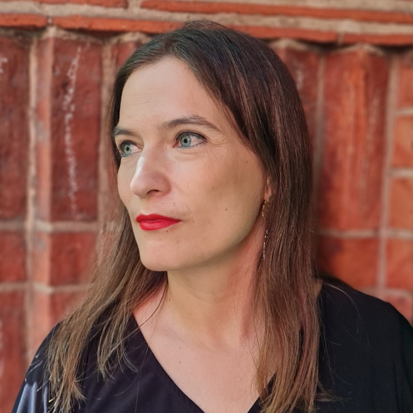
Profesora asociada del Instituto de Música de la Universidad Alberto Hurtado. Es doctora en musicología por la Universidad de las Artes de Berlín e investigadora responsable del proyecto El serialismo en América Latina como técnica cultural (Fondecyt regular 1220792). Es investigadora principal del Núcleo Milenio en Culturas Musicales y Sonoras y del Anillo de Investigación Animupa. Entre sus áreas de investigación se cuenta la música docta latinoamericana de los siglos XX y XXI, la historia cultural de la música y las trayectorias musicales entre América Latina y Europa. Ha publicado artículos y capítulos de libros en diversos países y es autora del libro Musiker unserer Zeit. Internationale Avantgarde, Migration und Wiener Schule in Südamerika (Munich: text + kritik 2018). Es miembro fundador de la red internacional de investigadores Trayectorias.
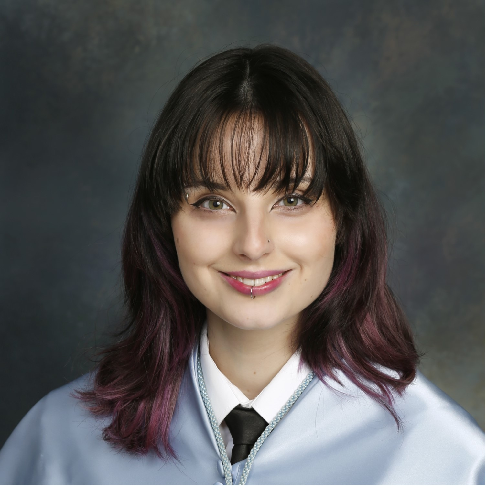
Personal Investigador Predoctoral en Formación en el Programa de Doctorado en Historia del Arte y Musicología de la Universidad de Salamanca. Cuenta con el título de Graduada en Historia y Ciencias de la Música por la Universidad de Salamanca y el Máster Universitario en Formación del Profesorado de ESO y Bachillerato, FP y Enseñanza de Idiomas por la Universidad Pontificia de Salamanca. Forma parte del GIR IHMAGINE (Intangible Heritage Music and Gender International Network) como miembro de la comisión Antropología, Patrimonios y Culturas Expresivas. Sus intereses de investigación se inscriben en el estudio de la música popular urbana aplicando la perspectiva de género
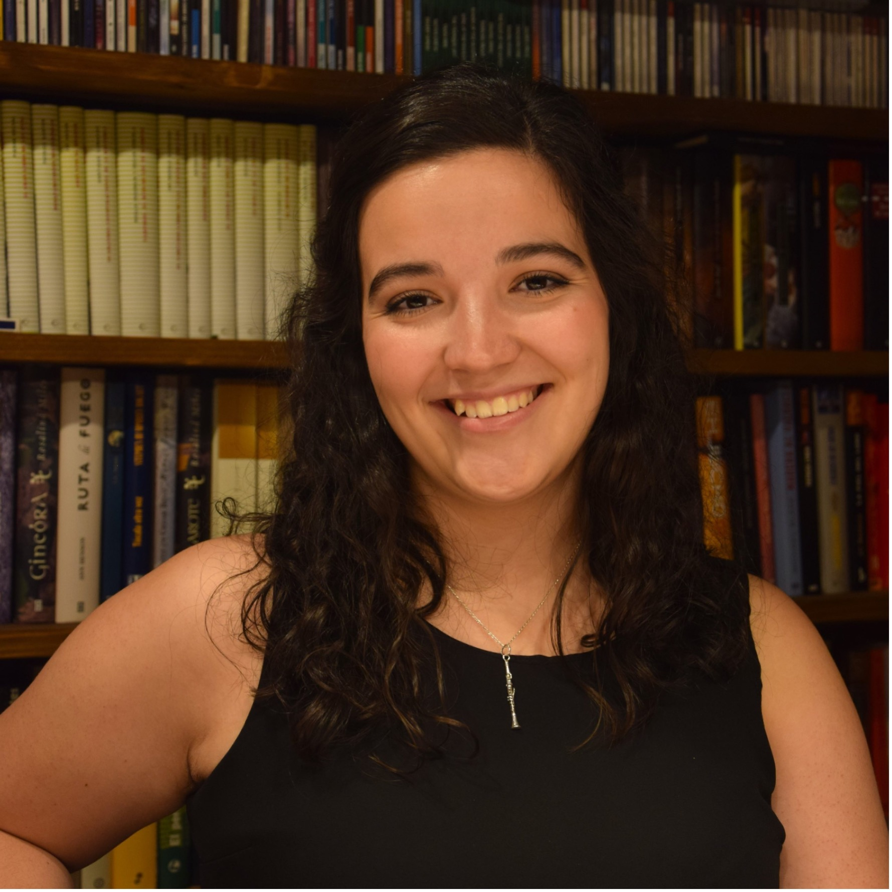
Personal Investigador en Formación en la Universidad de Salamanca con un contrato predoctoral financiado por la Junta de Castilla y León y el Fondo Social Europeo en el Departamento de Didáctica de la Expresión Musical, Plástica y Corporal de la misma universidad. Su campo de investigación se centra en la vida orquestal de Madrid a principios del siglo XX. Es graduada en Historia y Ciencias de la Música por la USAL y en el Máster Universitario de Música Hispana por la misma universidad. También es graduada en Enseñanzas Artísticas Superiores en la especialidad de Clarinete por el COSCyL. Es presidenta de la Asociación para la investigación musical "Rafael Benedito Vives".
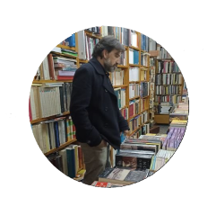
Profesional de la enseñanza con amplia experiencia educativa y formación en humanidades digitales, especializado en el uso de tecnologías aplicadas al estudio y difusión del conocimiento humanístico. Su trayectoria combina la docencia en centros de educación secundaria con un profundo compromiso con la innovación educativa y la integración de métodos digitales en contextos académicos y culturales. Domina herramientas digitales para la investigación, gestión y comunicación del patrimonio cultural y humanístico, contribuyendo a proyectos que impulsan la transformación digital del sector educativo y cultural.